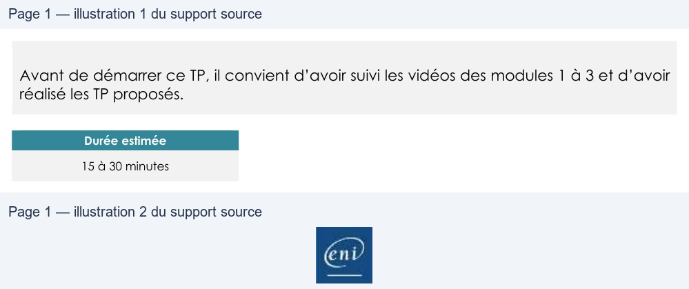

Transcription du document du Drive TSSR. La mise en forme est adaptée au Web ; les compléments IA du portail sont présentés séparément.
Administration Debian GNU/Linux
TP du Module 03 – Démarrage d’une distribution Debian
Avant de démarrer ce TP, il convient d’avoir suivi les vidéos des modules 1 à 3 et d’avoir
réalisé les TP proposés.
Durée estimée
15 à 30 minutes
•
Démarrer le système, ouvrez une session avec votre utilisateur
•
Quelle est la cible systemd qui sera atteinte par défaut au démarrage de la
machine ?
•
Dans le manuel de la commande systemd, rechercher le nom de la cible identifiée
au point précédent. Lire le paragraphe correspondant et en déduire le nom de la
cible permettant un démarrage normal SANS ENVIRONNEMENT GRAPHIQUE
•
Définir comme cible par défaut la cible trouvée au point précédent.
•
Redémarrer le poste avec environnement graphique. A l’issue du redémarrage,
l’environnement graphique a-t-il été chargé ? Est-ce normal ?
•
Exécuter la commande systemctl appropriée afin de charger l’environnement
graphique.
•
Une solution est proposée pour ce TP sous la forme d'un PDF commenté, disponible dans les
ressources à télécharger.
Page 1/1
© ENI – Tous droits réservés
BE
